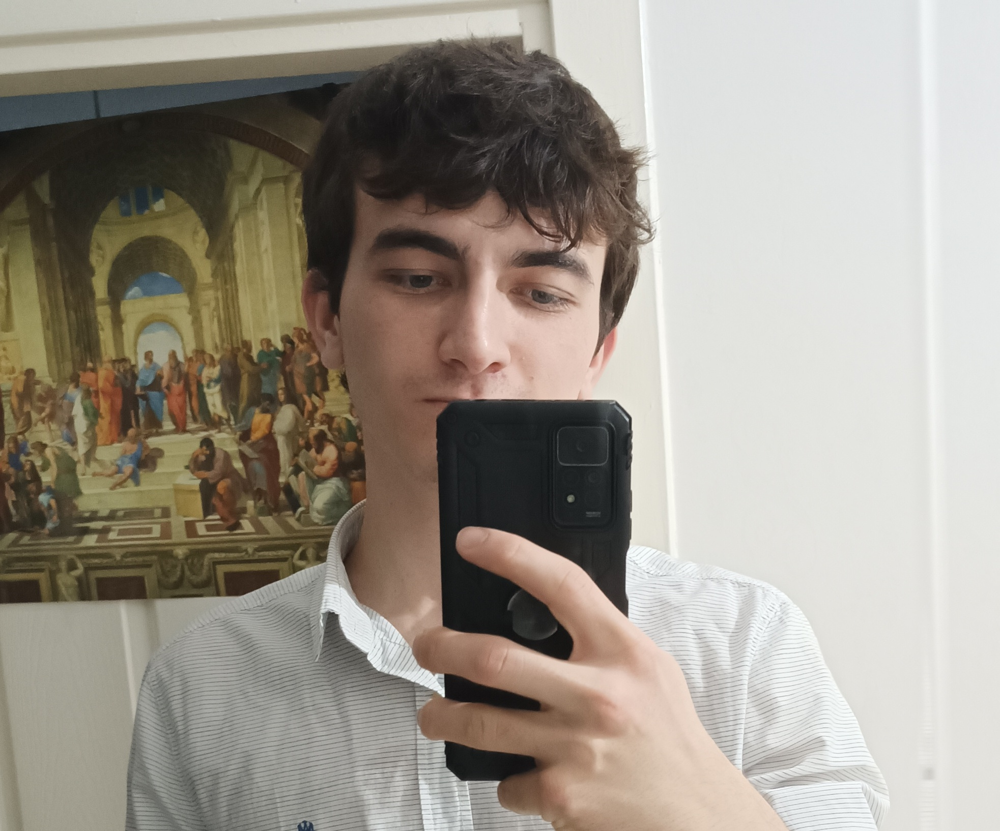

Alperen UÇAR

Summary
I am a person who loves science, technology and especially computer science. I am programming from the years of highschool. I want to solve big complex problems with the power of knowledge.
Education
- Technical HighSchool - Information Technologies/Database Programming
- Computer Programming Associate Degree from Gazi University
Work Experience
- 4A Labs Internship about Web Development
Skills
Languages
- Turkish - Native
- English - B1-B2
Awards, certifications or other achievements
- For a highschool project about books: I programmed a library automation with Windows Forms with the help of online resources. It was a time we students don't know anything about databases. I learn in the way, look at the online resources. I indirectly copy too while I need to learn with the tutor on the project. It was not a disadvantage but advantage for me on the road. I slowly get what most of the things mean. But despite that, I was still not be able to write that complex code by myself even smaller parts.